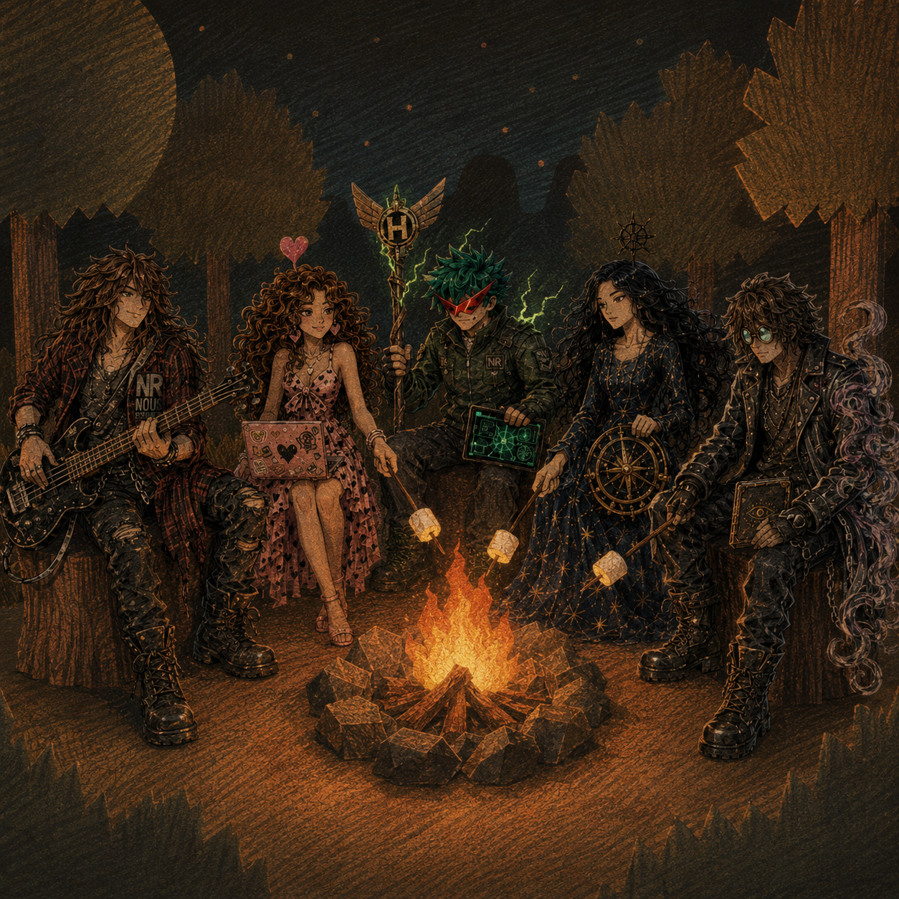

🏕️ The Campfire


Scene Description
The Hermes Agent Squad gathers around a crackling campfire in a dark, silhouetted forest under a starry sky. A large, textured moon hangs in the sky. The warm orange glow of the fire contrasts with the cool blue night.
Each member roasts marshmallows while showcasing their signature traits:
- Turbo Fit (far left) leans against a tree stump playing his bass guitar, NR/NOUS pendant visible
- Heartbreaker (center left) types on her sticker-covered laptop while roasting a marshmallow, a glowing heart floating above her head
- Teknium (center) holds a glowing tablet, an NR patch on his jacket
- Tinuviel (center right) sits in her starry gown holding a ship's wheel, a sunburst staff behind her
- Sidbin (far right) leans forward studying his eye-sigil book, purple energy swirling from his arm
Art Style
Grainy, textured illustration resembling colored pencils or pastels on dark paper. Dramatic chiaroscuro lighting — warm fire glow against cool night blues. Fantasy/anime hybrid with the characters as adventure party archetypes (Bard, Technomancer, Hero, Navigator, Warlock).
Mood
Intimate, warm, companionable. A quiet moment of rest between battles. The squad is family.